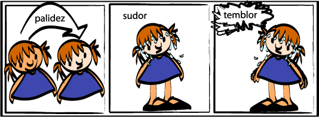
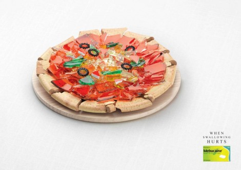
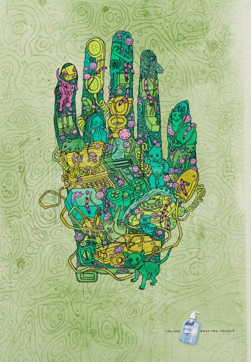

Enlaces de Interes


¿Cómo se pueden prevenir las hipoglucemias?
Es muy importante prevenir las hipoglucemias, de esta manera mantendremos la capacidad de nuestro cuerpo de reaccionar ante ellas de manera intacta. He aquí una serie de consejos:
- Hacerse mayor número de controles durante el día, sobretodo si se ha hecho ejercicio físico.
- Planificar con antelación el ejercicio físico que se va a realizar para poder ajustar la insulina que se va a administrar y los hidratos de carbono que se van a comer.
- Hacerse un control antes de acostarse y tomar hidratos de carbono si fuese necesario.
- Ajustar las correcciones de hiperglucemia lo máximo posible para evitar posteriores hipoglucemias.
- Tener en cuenta el sitio de inyección de la insulina, ya que hay áreas dónde la insulina se absorbe más rápido que en otras.
- A la hora de pinchar la insulina en una zona con poca grasa subcutánea coger un pellizco, de esta manera evitaremos inyectar sobre músculo que favorecería una absorción de la insulina mucho más rápida.
- No beber alcohol, pero si lo hacemos tendremos que ingerir raciones de hidratos de carbono de absorción lenta y hacernos más controles durante la noche.


